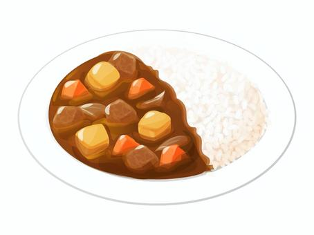
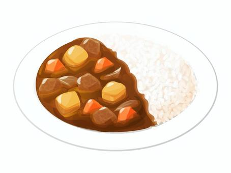
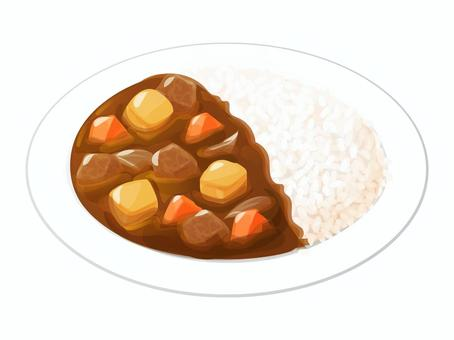

Description: A delicious and comforting Japanese dish with a unique blend of spices. Curry rice, or kare rice (pronounced karē raisu), is a dish that was brought to Japan during the Meiji era (1868–1912) from the British, when India was under colonial rule. It was served to the Japanese Imperial Navy to prevent thiamine (vitamin B-1) deficiency and became popular across Japan in the 1960s when curry made its appearance in restaurants and supermarkets.

Just One Cookbook is an excellent reference for Japanese recipes, including Japanese curry. The site provides detailed instructions, clear ingredient lists, and beautiful imagery, making it easy for users to follow along.
Cooking with Dog is usually my go-to recipe source for when I'm looking for authentic Japanese recipes, as it offers recipes with instructional videos. The visual aid of the videos, coupled with step-by-step written instructions, enhances the user experience, especially for complex dishes like Japanese curry.
Japanese Cooking 101 is another great resource for Japanese cuisine, offering a variety of recipes, including Japanese curry. The site's organized layout and beginner-friendly approach make it accessible for users of all cooking skill levels.
Minimalissimo showcases minimalist design across various disciplines. I particularly like how the images are a focal point. Drawing inspiration from this site could inform my design with clean layouts, ample white space, and elegant typography, creating a visually pleasing and uncluttered recipe page.
I personally think Airbnb's website does effective communication really well. The visual hierarchy and placing of interactive elements on the website makes sense, and information for each airbnb listing is very cleanly presented and neatly packed.
I like the simplicity of their website and use of clear, coherent imagery. Though the website may not be the most stylistically sophisticated, the focus of the website is its layout, imagery and easy navigation, which adds to the user experience.